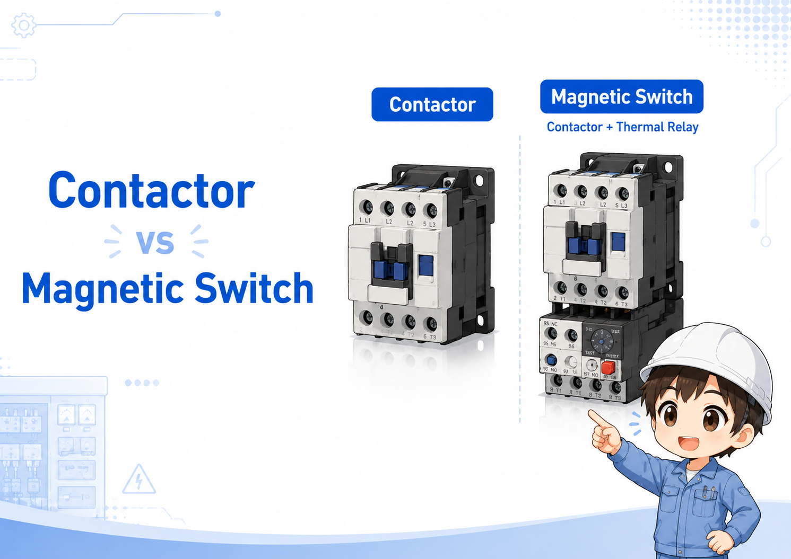

Learn the basics of electrical control from a practical field perspective.
Start with the fundamentals: inputs, outputs, contacts, sensors, and on/off control. This category organizes the basic ideas in an order that is easy to follow for beginners and field workers.
What you can learn in this category
Control systems become much easier to understand when you separate the field devices, the signals, and the PLC logic.
Understand how switches and sensors become inputs, and how lamps, solenoids, and other devices become outputs.
Learn the difference between NO and NC contacts and common signal patterns used in control panels.
Build a simple way to trace signals when checking equipment, PLC inputs, and output devices.
First articles to read
Start with these articles if you are new to electrical control or PLC-based equipment.
What Is a PLC? A Beginner-Friendly Guide for Electrical Control
Learn what a PLC is, how it reads inputs, controls outputs, differs from relay circuits, and connects to ladder logic in practical electrical control.
2Inputs, Outputs, and Control Signals
Understand the relationship between switches, sensors, lamps, solenoids, and PLC signals.
3Sensor Basics
Learn the common types of sensors used in control systems.
4NO and NC Contacts Explained
Understand how contact states are shown in diagrams and ladder logic.
Control Basics articles
These articles cover the basic parts and ideas used around control panels, PLCs, sensors, and field devices.
No-Fuse Breaker Basics: Protecting Wires from Overcurrent and Short Circuits
Learn what a no-fuse breaker does, how it trips during overcurrent or short circuits, and what to check before resetting a tripped breaker.
Control BasicsControl Panel Label Basics
Understand nameplates, device labels, terminal labels, operation labels, warning labels, drawing references, and practical field checks inside control panels.
Control BasicsControl Panel Wire Color Basics
Understand how control panel wire colors are used as clues for power, control, DC, and ground wiring, and how to confirm them with drawings, wire numbers, terminals, and voltage checks.
Control BasicsControl Panel Grounding Basics
Understand protective earth, frame ground, signal ground, grounding wires, bonding, noise reduction, and field checks inside control panels.
Control BasicsTerminal Block Basics
Understand how terminal blocks organize field wiring, panel wiring, terminal numbers, wire numbers, jumpers, and field checks.
Control BasicsPush Button Switch Basics
Learn NO/NC contacts, momentary and alternate operation, and practical wiring checks for push button switches.
Control BasicsSelector Switch Basics
Learn Manual/Auto and ON/OFF selector switch basics, 2-position and 3-position types, and practical panel checks.
Control BasicsManual/Auto Selector Circuit Basics: Switching Two Command Paths to One Output
Learn how Manual/Auto selector circuits choose between manual commands and automatic commands, and what to check around selector position, interlocks, priority, and troubleshooting.
Control BasicsPLC Input Troubleshooting
Check 24V power, COM wiring, sensor output, cables, PLC input terminals, input LEDs, and monitor status in a clear troubleshooting order.
Control BasicsGOT Touch Panel Basics
Learn how HMI screens connect to PLC devices, screen objects, commands, alarms, and field checks.
Control BasicsGX Works3 ADD and SUB Instruction Basics
Understand source values, destination devices, scan execution, ADDP/SUBP, and practical field checks.
Control BasicsGX Works3 MOV Instruction Basics: Moving Values Between Devices
Learn how the MOV instruction copies a source value to a destination device in GX Works3 ladder programs, including execution conditions, MOVP, DMOV, overwriting, and field checks.
Control BasicsGX Works3 Comparison Instruction Basics: Judging Conditions with =, >, and <
Learn the basics of GX Works3 comparison instructions, how they work as ladder conditions, and what to check when they do not turn ON.
Control BasicsPilot Lamp Basics
Learn what pilot lamps and indicator lights do in control panels, how lamp colors show machine status, and what to check when a lamp does not turn on.
Control BasicsControl Panel Light Basics
Understand cabinet lighting, panel lamps, door switches, power supply wiring, inspection visibility, and practical field checks inside control panels.
Control BasicsDC 24V Power Supply Basics: How Control Panels Use 24V DC
Learn how a DC 24V power supply is used in control panels for PLCs, sensors, relays, lamps, and basic troubleshooting.
Control BasicsDC 24V Power Troubleshooting Basics: What to Check When 24V Drops
Learn what to check when DC 24V disappears, drops under load, or becomes unstable in a control panel.
Control BasicsCircuit Protector Basics: How Control Panels Protect Control Circuits
Learn how circuit protectors protect small control circuit branches and what to check before resetting a tripped protector.
Analog Output Basics: How PLCs Send 0-10V and 4-20mA Signals
Learn how PLC analog output modules send 0-10V and 4-20mA signals to control inverters, valves, and analog devices.
Control BasicsNoise Filter Basics
Learn how noise filters help reduce electrical noise in control panels, and what to check around power lines, grounding, wiring routes, and machine symptoms.
Control BasicsShielded Cable Basics
Learn how shielded cables help reduce electrical noise influence in sensitive control wiring, and what to check around routing, grounding, and termination.
Control BasicsPower and Signal Wiring Separation Basics
Learn why power wiring and signal wiring should be separated in control panels, and how routing distance, crossings, shielding, and field checks help reduce noise problems.
Control BasicsCurrent Transformer Basics
Learn how current transformers and current sensors detect load current safely in control panels, and what to check around CT ratio, direction, wiring, and field monitoring.

Electromagnetic Contactor vs Magnetic Switch: What Is the Difference?
Learn the practical difference between an electromagnetic contactor and a magnetic switch, including contactors, thermal relays, motor starters, and field checks.
Thermal Relay Basics: Protecting Motors from Overload
Learn how thermal relays protect motors from overload, how they work with magnetic contactors, and what to check before resetting a tripped relay.
Control BasicsWiring Duct Basics
Learn what wiring ducts are, why control panels use them, how they relate to DIN rails and terminal blocks, and what to check when inspecting panel wiring.
Control BasicsDIN Rail Basics
Understand how DIN rails are used to mount terminal blocks, relays, PLC units, power supplies, and other control panel devices.
Control BasicsWhat Is a PLC? A Beginner-Friendly Guide for Electrical Control
Learn what a PLC is, how it reads inputs, controls outputs, differs from relay circuits, and connects to ladder logic in practical electrical control.
Contacts and signalsRelay Basics
Learn how relays switch signals and why they are still important in control panels.
Contacts and signalsRelay Socket Basics: How Relay Bases Make Wiring and Replacement Easier
Learn what a relay socket does, how relay body and socket wiring differ, how to read terminal numbers, and what to check before replacing or troubleshooting a relay.
Contacts and signalsTimer Relay Basics: ON Delay, OFF Delay, and Field Checks
Learn what a timer relay does in hardwired control circuits, how ON-delay and OFF-delay differ, and what to check during troubleshooting.
Contacts and signalsSSR Basics: How Solid State Relays Switch Loads Without Contacts
Learn what an SSR does, how it differs from a mechanical relay, and what to check around heat dissipation, leakage current, AC/DC loads, and field troubleshooting.
SensorsNPN and PNP Sensors
Understand the difference between sink and source style sensor outputs.
SensorsPhotoelectric Sensor Basics
Understand the main photoelectric sensor types, detection distance, optical axis alignment, dirt, false detection, and practical checks before replacing a sensor.
Control BasicsLight Curtain Basics: Safety Detection for Machine Guarding
Learn how light curtains detect entry into hazardous areas and send safety signals to safety relays or controllers.
SensorsProximity Sensor Basics
Understand non-contact metal detection, detection distance, target material, wiring, PLC input status, and practical checks before replacing a proximity sensor.
SensorsLimit Switch Basics
Learn how limit switches detect mechanical position in equipment.
Control BasicsPressure Switch Basics
Learn how pressure switches detect pressure, output ON/OFF signals, and connect to PLC input logic.
Control BasicsFlow Switch Basics
Learn how flow switches detect flow in piping, output ON/OFF signals, and connect to PLC input logic.
Control BasicsFloat Switch Basics: Detecting Liquid Level for Pump Control
Learn how float switches detect liquid level and send simple ON/OFF signals for pump control, alarms, and PLC inputs.
Control BasicsVacuum Ejector Basics
Understand how vacuum ejectors create suction, how vacuum pads hold workpieces, and how vacuum switch signals are used in control.
Control BasicsVacuum Switch Basics
Understand suction confirmation, vacuum setpoints, and how a vacuum switch signal is used as a PLC input.
PneumaticsReed Switch Basics
Learn how reed switches detect air cylinder position, how the signal connects to PLC inputs, and what to check in the field.
Control BasicsWhat Is an Air Cylinder? Beginner Guide to Pneumatic Motion
Learn what an air cylinder is, how compressed air creates forward and return motion, how air valves and reed switches relate, and what to check in the field.
Control BasicsAir Tube and Fitting Basics
Learn what air tubes and fittings do, how one-touch fittings work, how to confirm tube size, and what to check for leaks, bends, and pull-out issues in the field.
Control BasicsAir Valve Basics
Understand pneumatic air valves, port types, solenoid valve operation, air cylinder flow, and practical field checks before replacing a valve.
Control BasicsAir Regulator Basics: How Pneumatic Pressure Adjustment Works
Learn how an air regulator sets downstream pressure, how to read gauge values during operation, and what to check when pneumatic pressure is too high or too low.
Control BasicsPneumatic Silencer Basics
Learn how pneumatic silencers reduce exhaust noise from air valves and what to check when clogging, noise, or slow cylinder movement occurs.
Control BasicsAir Filter Regulator Lubricator Basics
Learn how filters, regulators, lubricators, drains, and gauges prepare compressed air for pneumatic equipment.
Control BasicsSolenoid Valve Manual Override Basics
Learn what a solenoid valve manual override does, when to use it, and how to check motion safely before operation.
Control BasicsSolenoid Valve Troubleshooting
Troubleshoot a solenoid valve by checking PLC output, DC24V power, coil, manual operation, air pressure, piping, and cylinder-side movement in order.
Control BasicsLimit Switch Troubleshooting: Position, Contact, Wiring, and PLC Input Checks
Learn how to troubleshoot a limit switch that does not respond by checking mechanical position, contact state, wiring, terminals, and PLC input status.
Control BasicsPressure Gauge Basics
Understand pneumatic pressure gauges, MPa reading, gauge location, pressure drop during movement, and field checks before changing regulator settings.
Control BasicsPressure Switch vs Pressure Gauge
Compare pressure switches and pressure gauges, including PLC signal checks, visual gauge readings, set pressure, wiring checks, and troubleshooting order.
Control BasicsSpeed Controller Basics: How to Adjust Air Cylinder Speed
Learn the basics of pneumatic speed controllers, air cylinder speed adjustment, meter-out and meter-in control, adjustment screws, and field checks.
SensorsEncoder Basics
Learn how encoders are used to detect position, speed, and rotation.
SensorsLoad Cell Basics: Measuring Force and Weight in Control Systems
Learn the basics of load cells, force and weight measurement, indicators, transmitters, PLC signals, tank weighing, hopper weighing, and field checks.
SensorsArea Sensor Basics: Detecting Presence and Entry Zones
Learn the basics of area sensors, presence detection, entry zones, detection areas, light curtain differences, safety-related use, and field checks.
Control BasicsTemperature Sensor Basics: Thermocouples, RTDs, Wiring, and PLC Inputs
Learn what temperature sensors do in electrical control, including thermocouples, RTDs, wiring methods, temperature controllers, PLC temperature inputs, and field check points.
Motors and drivesInverter Basics
Learn how an inverter or VFD controls motor speed, how frequency relates to speed, and what to check for PLC commands, wiring, parameters, and alarms.
DC Motor Control Basics: ON/OFF, Forward/Reverse, and Speed Control
Learn the basics of DC motor control, including ON/OFF control, forward/reverse rotation, speed control, motor drivers, PLC outputs, and field checks.
Motors and drivesServo Motor Basics
Understand the basic role of servo motors in positioning control.
Control BasicsSTO Basics: Safe Torque Off for Inverters and Servo Drives
A beginner-friendly guide to Safe Torque Off, drive torque removal, emergency stop relation, safety relays, reset conditions, and field check points.
Safety Relay Basics: Inputs, Reset, EDM, and Safety Outputs
A beginner-friendly guide to safety relay inputs, CH1/CH2, reset, EDM, safety outputs, contactors, STO inputs, and practical field checks.
Control BasicsSafety Door Switch Basics: Guard Door Interlock and Safety Relay Signals
Learn how safety door switches monitor guard doors and send safety input signals to safety relays or controllers.
Control BasicsEmergency Stop Switch Basics: NC Contacts and Safety Circuit Thinking
A beginner-friendly guide to emergency stop switches, NC contacts, safety relays, PLC status inputs, reset conditions, and practical field checks.
Control BasicsControl Panel Cooling Fan Basics: Temperature Control and Airflow
Learn the basics of control panel cooling fans, panel temperature control, intake, circulation, exhaust airflow, filters, and field checks.
Control BasicsSignal Tower Light Basics
Learn what signal tower lights do, how red, amber, green, and buzzer indications show machine status, how PLC outputs are involved, and what to check in the field.
Control BasicsControl Panel Heater Basics
Learn why panel heaters are used to reduce condensation risk inside control cabinets, how they differ from cooling fans, and what to check in the field.
Control BasicsWire Number and Marker Tube Basics
Understand how wire numbers, marker tubes, drawings, terminal blocks, PLC I/O, and field devices connect together for easier tracing and field checks.
Control BasicsPLC I/O Unit Basics: How Input and Output Modules Connect Field Devices
Learn how PLC input and output modules connect sensors, push buttons, lamps, relays, and other field devices.
Control BasicsAnalog Input Basics: How PLCs Read 0-10V and 4-20mA Signals
Learn how PLC analog input modules read 0-10V and 4-20mA signals and convert them into usable values.
Control BasicsTerminal Block Jumper Basics
Understand how terminal block jumpers distribute common 24V, 0V, and signal lines, and what to check in the field.
Control BasicsEarth Leakage Breaker Basics
Learn how earth leakage breakers detect leakage current, how they differ from standard breakers, and what to check around trips, grounding, wiring, and field safety.
Control BasicsAir Circuit Breaker Basics: Large-Capacity Circuit Protection
Learn the basics of air circuit breakers, large-capacity circuit protection, trip units, arc extinguishing, ACB and MCCB differences, and field checks.
Control BasicsSurge Protection Basics: Protect Control Panels from Lightning and Switching Surges
Learn the basics of surge protection, lightning surges, switching surges, SPD devices, grounding, control panel protection, and field checks.
Control BasicsControl Transformer Basics: How Control Panels Step Down AC Voltage
Learn how control transformers step down AC voltage and provide control power inside electrical control panels.
Control BasicsControl Panel Outlet Basics
Understand maintenance outlets inside or near control panels, including temporary use, power source, breaker or fuse, rated capacity, leakage protection, grounding, and practical field checks.
Control BasicsFuse Holder Basics: How Control Panels Protect Small Circuits
Learn how fuse holders protect small control circuit branches inside electrical control panels.
ActuatorsIAI RoboCylinder Basics: Difference from Air Cylinders and Field Checks
Learn the basics of IAI RoboCylinders, differences from air cylinders, controller signals, homing, position numbers, complete signals, alarms, and field checks.